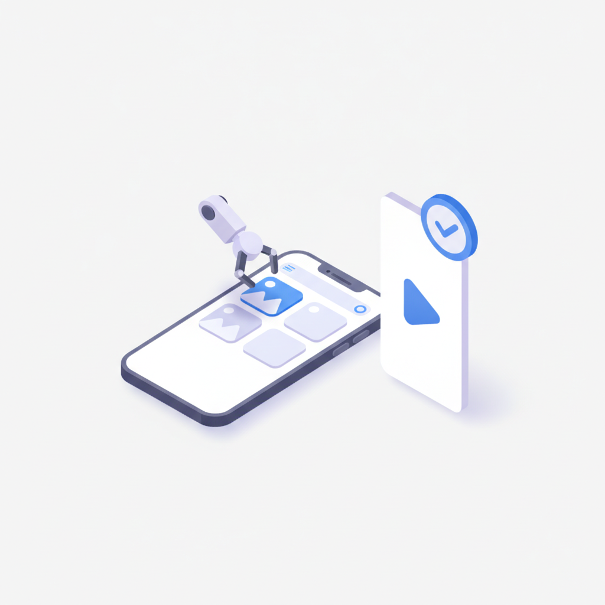
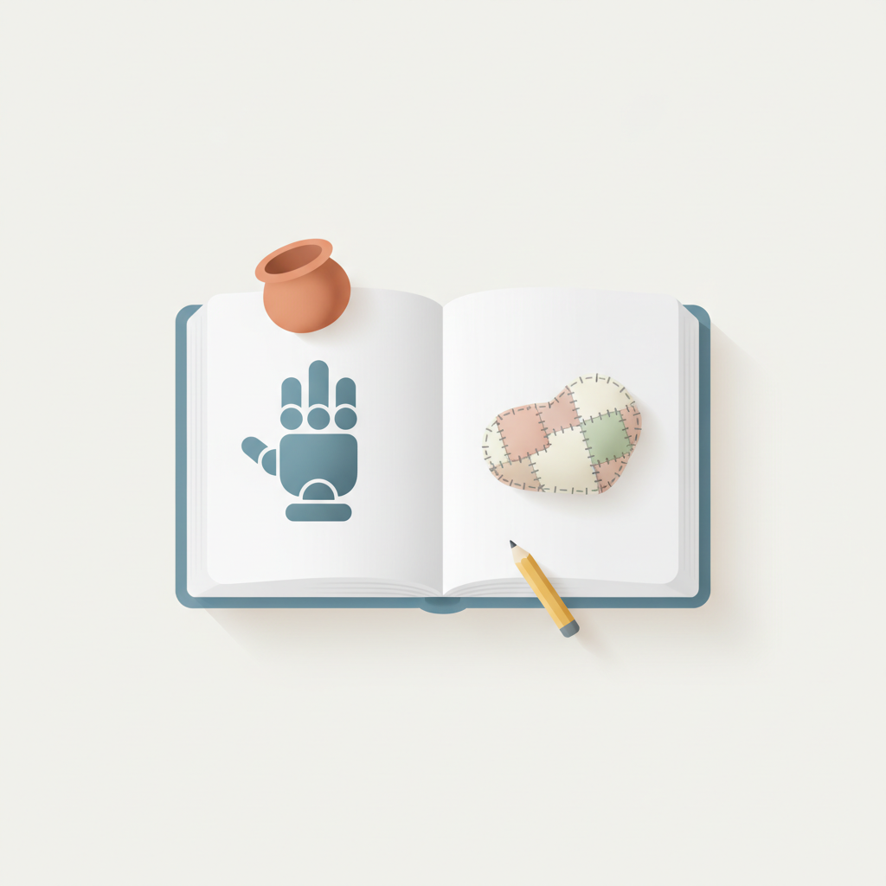
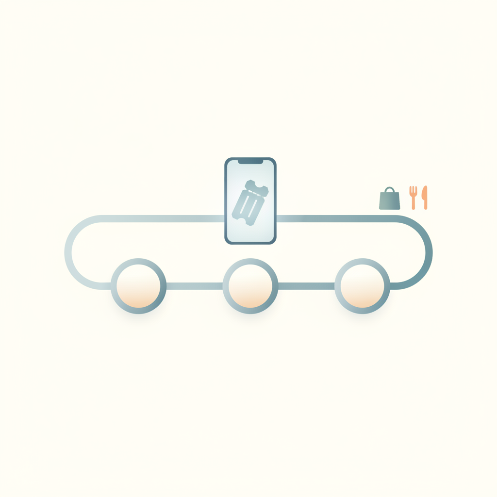
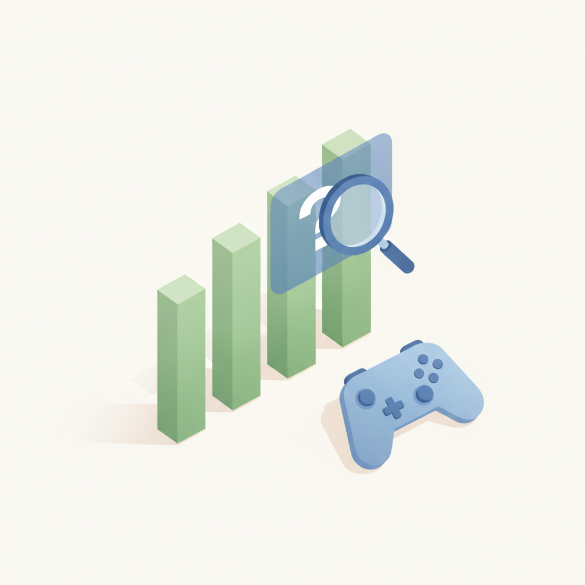
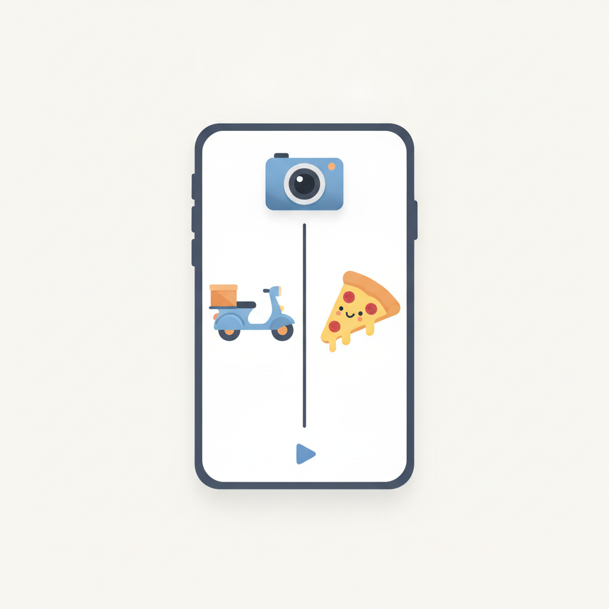
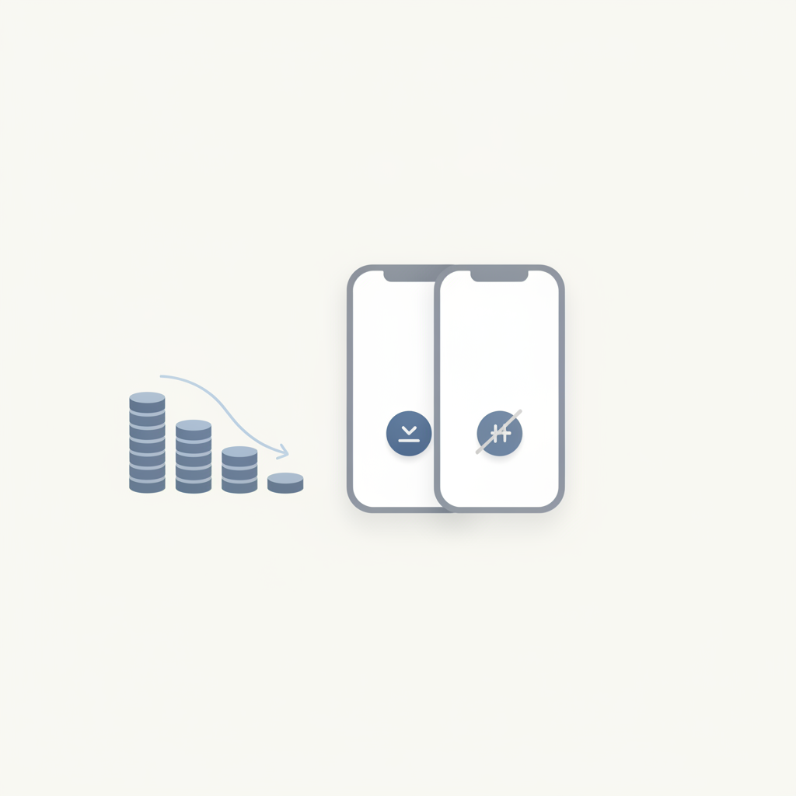

안녕하세요! 금요일 마케팅 소식 전해드립니다 😊 오늘은 이노션의 '트렌드 뒷담화 2027'이 제시한 'AI 패러독스'라는 키워드가 흥미롭습니다. AI가 일상 깊숙이 파고들수록 오히려 사람다움과 아날로그 감성을 향한 반작용도 커진다는 흐름인데, 소비자 리서치와 트렌드 기획을 다루는 분들께 좋은 출발점이 될 것 같습니다. AI를 거스르는 것도, 맹목적으로 따라가는 것도 아닌 그 긴장을 어떻게 브랜드 언어로 풀어내느냐가 앞으로 마케터에게 중요한 과제가 되어가고 있습니다.
오늘의 마케팅 뉴스에서 주목할 또 하나의 흐름은 웨이팅 앱의 진화입니다. 단순히 줄을 서는 행위가 소비자의 시간·동선·데이터를 아우르는 서비스 산업으로 확장되고 있다는 분석인데, 오프라인 매장을 운영하거나 로컬 커머스에 관심 있는 분들이라면 한번 짚어볼 만한 변화입니다. 대기 경험을 브랜드 접점으로 설계하는 시도가 늘어날수록, 고객 여정의 '시작 이전'까지 관리하는 게 마케팅의 영역으로 들어오고 있다는 신호이기도 합니다.
금요일 아침, 이번 주도 좋은 인사이트로 가득 채우시길 바랍니다! 🙌
챗GPT·제미나이 등 AI로 상품을 검색하는 소비자가 늘면서 기업들이 생성형 엔진 최적화(GEO)에 나서고 있다. SK브로드밴드는 고객 질문에 맞게 콘텐츠를 재구성하고, 리틀리는 홈페이지 정비 후 AI 유입자의 높은 가입률을 확인했다. 다만 GEO 노출이 실제 매출로 이어지는지 검증하는 체계 마련이 공통 과제로 남아, 마케터들은 콘텐츠 품질과 성과 측정 방법론을 함께 고민해야 할 시점이다.
›
2한국딥러닝이 SK텔레콤과 함께 AI 에이전트 '딥 에이전트'를 커머스 광고 콘텐츠 제작에 적용하는 실증을 진행 중이다. 쇼핑몰 상품 페이지를 AI가 분석해 이미지를 선별하고 숏폼 광고 영상을 생성한 뒤, 원본 상품 정보와의 일치 여부까지 자동 검수한다. 광고 소재 제작 자동화가 커머스 마케팅 실무에 본격 적용되는 사례로, 콘텐츠 제작 비용과 속도 측면에서 실무적 시사점이 크다.
›
3이노션이 2027년 소비 트렌드 분석서 '친절한 트렌드 뒷담화 2027'을 출간하며 'AI 패러독스'를 핵심 주제로 내세웠다. AI 기술이 발전할수록 소비자들이 오히려 손으로 만든 것, 불완전한 경험, 비효율적인 과정에 끌리는 심리가 강해진다는 분석이다. 마케터는 AI 자동화 흐름 속에서도 인간적 감성과 아날로그 경험을 브랜드 차별화 요소로 활용하는 전략을 검토할 필요가 있다.
›
4KPR 인사이트연구소가 예약·웨이팅 플랫폼 빅데이터를 분석한 결과, 웨이팅이 단순한 대기 행위를 넘어 소비자의 시간과 동선을 관리하는 서비스로 자리 잡고 있다. 캐치테이블 운영사 와드 등 플랫폼들은 대기 중 소비자 행동 데이터를 축적하며 쇼핑·관광 연계 산업으로 영역을 넓히고 있다. 마케터는 웨이팅 대기 시간을 브랜드 접점으로 활용하는 새로운 채널 전략을 고려할 수 있다.
›
5애피어가 게임 광고 시장에서 설치 수·ROAS 등 기존 지표가 양호해도 실제 광고가 새롭게 만들어낸 성과인 '증분 효과(Incrementality)'를 별도로 측정해야 한다고 강조했다. 광고 성과로 집계된 수치 중 광고가 없었어도 발생했을 전환이 포함될 수 있어 예산 확대 판단이 왜곡될 수 있다는 것이다. 게임뿐 아니라 퍼포먼스 마케팅 전반에서 증분 측정 체계 도입이 광고 효율화의 핵심 과제로 부상하고 있다.
›
6제일기획이 배달앱 땅교와 피자 브랜드 노모어피자를 하나의 틱톡 크리에이터 콘텐츠에 함께 담는 캠페인을 집행하고, 그 성과를 2026년 10월 20일 틱톡 서밋 코리아에서 공유했다. 두 광고주를 단일 숏폼 콘텐츠에 통합하는 방식으로 제작비 효율을 높이면서도 자연스러운 브랜드 노출을 구현한 사례다. 틱톡 크리에이터 중심의 멀티브랜드 콘텐츠 전략이 국내 마케팅 실무에 새로운 포맷으로 주목받고 있다.
›
7중고나라가 2025년 1~9월 안심결제 스마트폰 거래를 분석한 결과, 30만 원 미만 제품 비중이 전년 동기 37.8%에서 48.2%로 10.4%포인트 상승했다. 반면 100만 원 이상 고가 제품 비중은 25.0%에서 12.9%로 절반 가까이 줄었다. 신제품 가격 인상이 이어지는 가운데 중고 시장이 실질적인 소비 대안으로 자리 잡고 있어, 마케터는 가성비 소비층을 겨냥한 전략과 중고 거래 플랫폼 연계 마케팅을 검토할 필요가 있다.
›메타 React 팀 출신 로런 탠 대담, 검증은 에이전트에게 맡기고 실수는 규칙으로 막는 법
브랜드 진단부터 지금 당장 해야 할 우선순위까지,
30분 무료 상담에서 함께 정리해드려요.
이미 수십 개 브랜드가 상담받았습니다.
내 브랜드처럼, 함께 고민하는 팀원의 마음으로 봅니다.
스타트업 대표·마케팅 담당자를 위한 30분